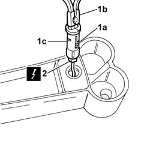

7065C84 front power point housing - r r
- Path
- Procedures > 70 FITTINGS > 7065 SEAT BELTS AND ACCESSORIES > 7065C accessories and decorations > 7065C84 front power point housing - r r
- Kind
- repair procedure (removal / refitting; the operation number is the code)
- Applies to
- all engines; all production periods
- Interactive page
- https://sloeber94.github.io/elrnDB-fPnd/en/#/2753327
Applies to: all engines; all production periods
 Removing
Removing
 Refitting
RefittingDisconnect the battery negative terminal.
1. Extract the current socket housing (1a) using the special tool (1b).
 | Name | Country |
|---|---|---|
1b | Pliers | 1.876.044.000 |
2. Disconnect the electrical connection.
 | Name | Connector |
|---|---|---|
2 | Cigar lighter current socket | P50 |
Remove the current socket housing.

Applies to: all engines; all production periods
Refitting
RemovingCheck that the cigarette lighter seating is undamaged.
Connect the electrical connection.
| Name | Connector |
|---|---|---|
- | Cigar lighter current socket | P50 |
Fit the cigar lighter housing.
Connect the battery negative terminal.